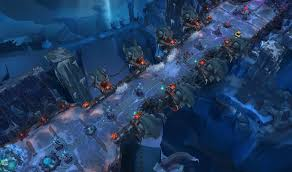

League of Legends není jen o jedné mapě. Hra nabízí několik různých režimů, které se liší dynamikou, délkou zápasu a strategickými nároky. Každý mód vyžaduje jiný přístup k výběru šampionů i k samotné taktice boje.
Herní režimy

Summoner's Rift
Toto je vlajková loď celého LoL. Standardní mapa 5 proti 5, kde se odehrávají všechny profesionální turnaje. Cíl je jasný: zničit nepřátelský Nexus. Mapa je rozdělena na tři linky a rozsáhlou džungli plnou monster, jako je drak nebo Baron Nashor. Tento režim vyžaduje maximální soustředění, týmovou koordinaci a strategické plánování.
ARAM (Howling Abyss)
Zkratka pro "All Random, All Mid". V tomto režimu dostanete náhodného šampiona a všichni hráči se potkají na jediné úzké lince – Mostě vzdechů. Neexistuje zde džungle ani možnost se léčit na základně, pokud nezemřete. Je to neustálý týmový souboj plný chaosu, kouzel a akce, který obvykle trvá kolem 15 až 20 minut.


Speciální módy
Riot Games pravidelně do hry vrací oblíbené časově omezené režimy. Mezi nejpopulárnější patří Arena, kde proti sobě bojují dvojice v malých arénách, nebo URF (Ultra Rapid Fire), kde mají šampioni téměř nekonečnou manu a velmi krátké čekací doby na kouzla. Tyto módy slouží hlavně pro relaxaci a zábavu s přáteli bez tlaku na hodnocené body.